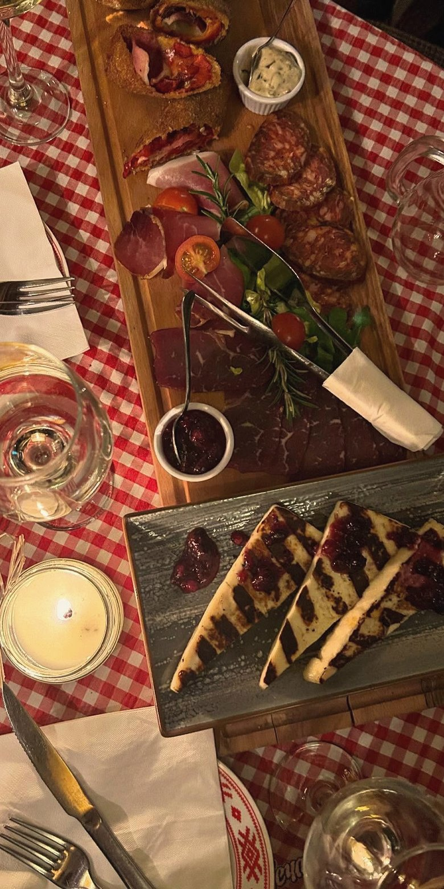
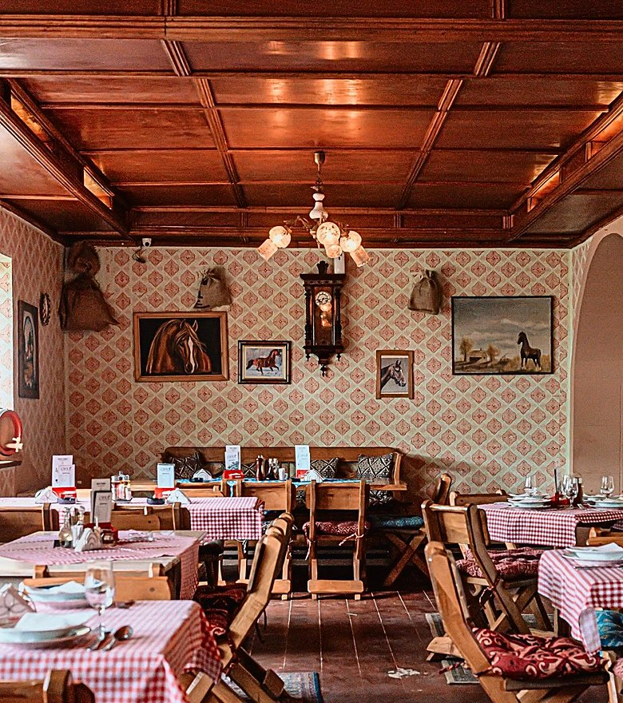
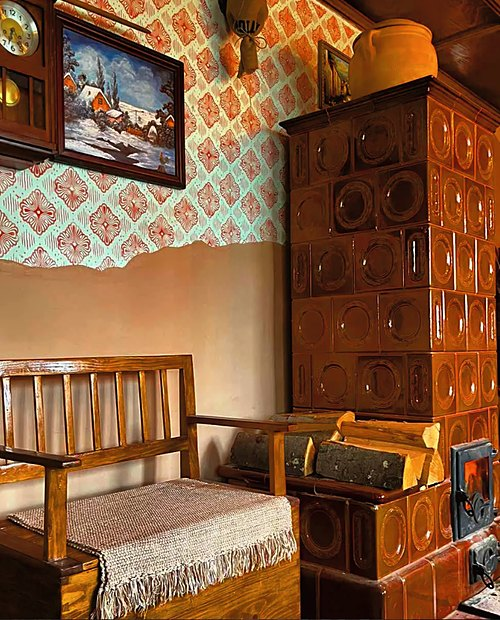
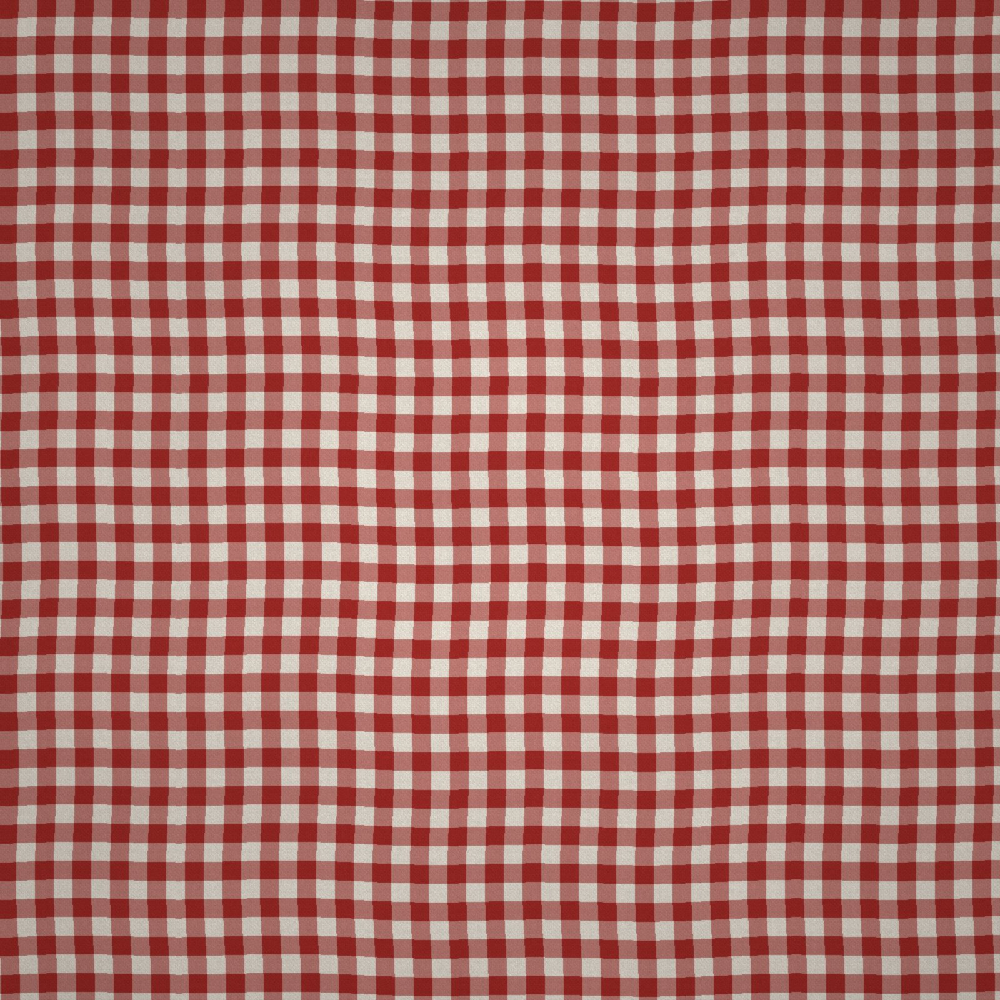
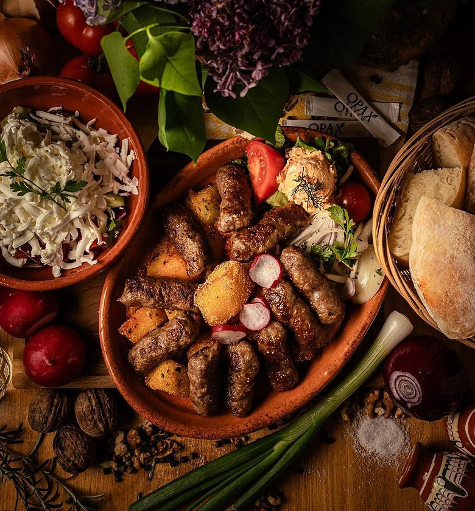
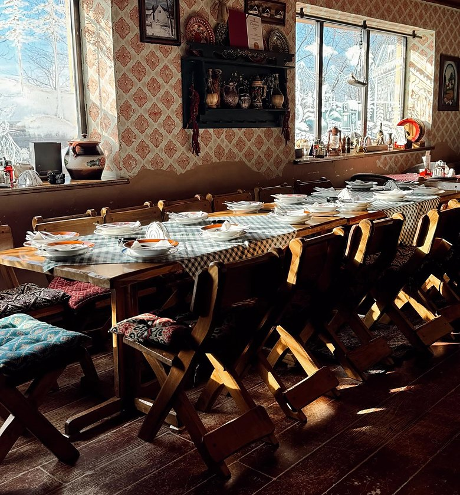
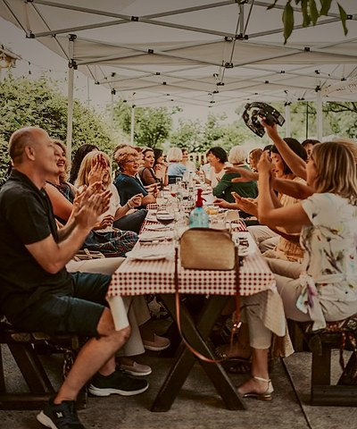
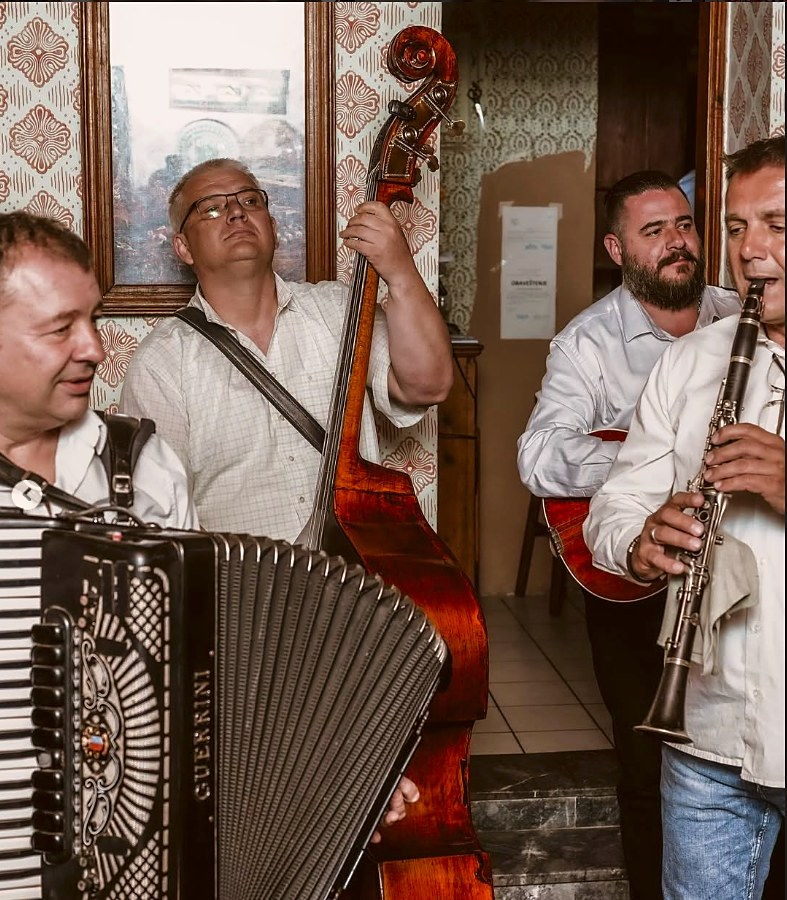

Домаћа кухиња, башта под орахом и тамбураши суботом, између Врбаса и Куле.
Користимо колачиће да би сајт радио како треба. Више
Кувамо домаћа јела по старим, породичним рецептима.
Салаш Орах је ресторан у Врбасу, на Кулском путу. Код нас се долази на миран ручак, породично окупљање или вече уз тамбуру.



Чорбе, роштиљ, јела испод сача, риба и домаћи колачи. Викендом телећа коленица, а шаран у рашљама по поруџбини.
Служимо и доручак, а за посне дане имамо посебан посни мени.
Погледајте јеловник


За мања и већа друштва, у сали или у башти под орахом. Јавите нам датум и број гостију, па ћемо заједно договорити мени и детаље.
Договоримо прославу
Сваке суботе
Тамбураши уживо, старе војвођанске песме и пуна трпеза до касно у ноћ. Резервишите сто на време.
Резервишите сто„Прелеп салашарски амбијент, љубазно особље, укусна храна.“
„Укусна храна, обилне порције, повољно, одлична услуга.“
„Одлична храна, љубазно особље и пријатан амбијент.“
★★★★★ · 545 рецензија на Google-у · Погледајте све →
Да, преко форме на сајту или телефоном на 069 1480100.
Да, паркинг за госте је бесплатан.
Да, у башти су љуљашка и кућица за игру, па деца могу да се играју док ви ручате.
Да, крштења, рођендане, венчања и пословне ручкове. Јавите нам датум и број гостију, па ћемо заједно договорити мени и детаље.
Суботом увече, уз тамбураше уживо. Препоручујемо да сто резервишете на време.
Да, посна јела су посебно означена на јеловнику.
Сваког дана06:00 – 23:00Суботом06:00 – 01:00Уторкомзатворено
Изглед можемо да вам покажемо, а за укус морате да дођете.